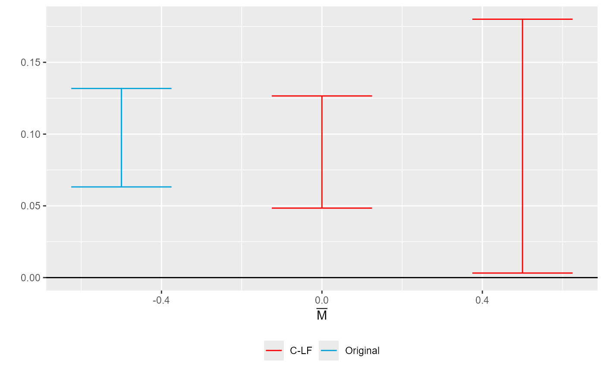

Sensitivity plot under the relative-magnitudes restriction
createSensitivityPlot_relativeMagnitudes.RdPlots how the robust confidence sets change with Mbar under \(\Delta^{RM}(Mbar)\), \(\Delta^{SDRM}(Mbar)\) and their variants with a sign or monotonicity restriction, next to the original confidence interval. For fect output, plot(type = "sens", restrict = "rm") in the fect package draws a similar figure.
Usage
createSensitivityPlot_relativeMagnitudes(robustResults, originalResults,
rescaleFactor = 1, maxMbar = Inf,
add_xAxis = TRUE)Arguments
- robustResults
Data frame of robust confidence sets from
createSensitivityResults_relativeMagnitudes(), with columnsmethod,lb,ubandMbar.- originalResults
Data frame with the original confidence interval from
constructOriginalCS(), with columnsmethod,lbandub.- rescaleFactor
Scalar that rescales the Mbar values and the bounds of the confidence sets. Default equals one.
- maxMbar
Largest Mbar value to plot. Default equals infinity, which plots all values.
- add_xAxis
Logical that specifies whether to draw a horizontal line at zero. Default equals
TRUE.
References
Rambachan, Ashesh, and Jonathan Roth (2023). A More Credible Approach to Parallel Trends. Review of Economic Studies 90 (5): 2555-2591. doi:10.1093/restud/rdad018
Examples
# \donttest{
# Placebo periods -2, -1 and 0, then post periods 1 to 4. fect_sens() makes this
# call for you on a fect() run with placeboTest = TRUE.
betahat <- c("-2" = 0.02, "-1" = -0.01, "0" = 0.01,
"1" = 0.08, "2" = 0.10, "3" = 0.09, "4" = 0.12)
sigma <- 0.0004 * 0.5^abs(outer(1:7, 1:7, "-")) + 0.0001
kwargs <- list(betahat = betahat, sigma = sigma, numPrePeriods = 3,
numPostPeriods = 4, l_vec = rep(0.25, 4))
robustResults <- do.call(createSensitivityResults_relativeMagnitudes,
c(kwargs, list(Mbarvec = c(0, 0.5), gridPoints = 200)))
originalResults <- do.call(constructOriginalCS, kwargs)
createSensitivityPlot_relativeMagnitudes(robustResults, originalResults)

# }